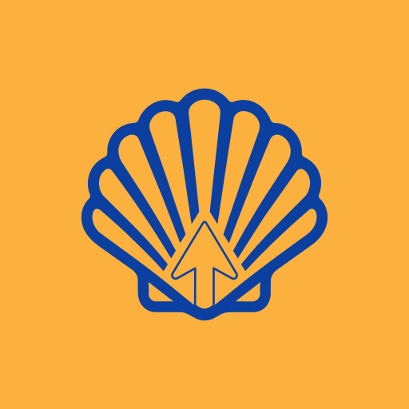
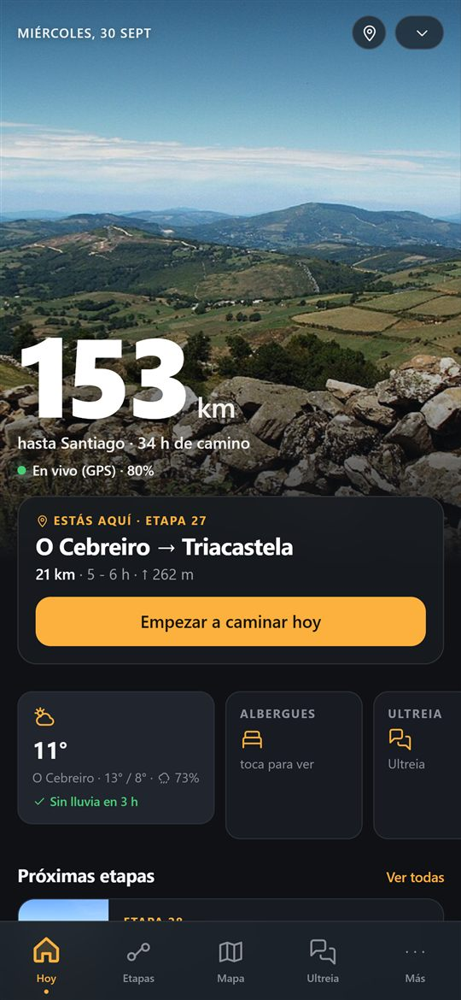
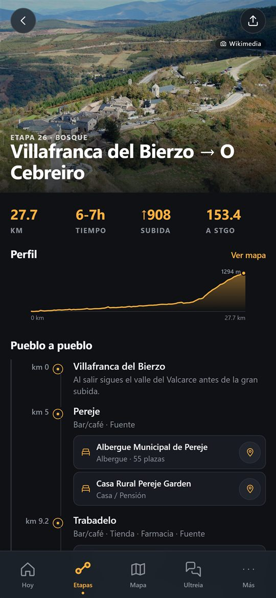
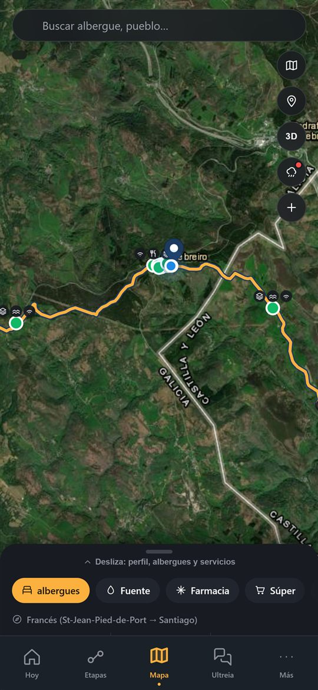
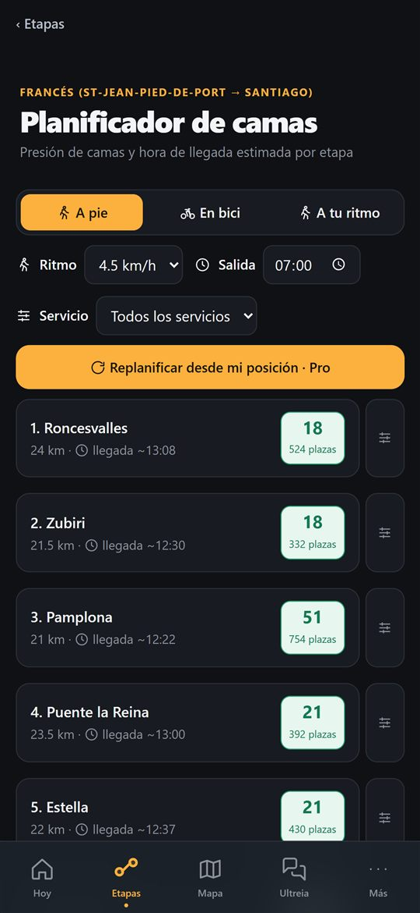
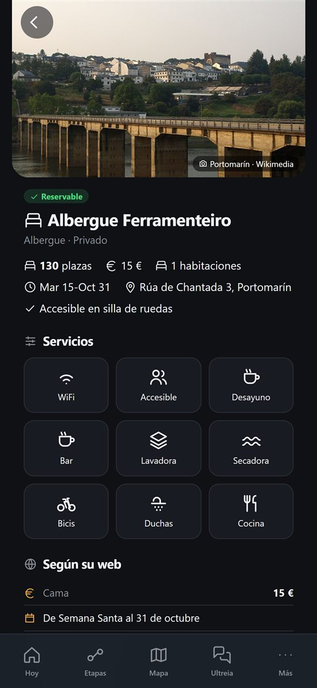

CaminoMateCuántos km te quedan, qué hay en cada pueblo y dónde dormir esta noche. 15 caminos a Santiago en tu iPhone.
¿Estás en el ordenador?Escanea con la cámara del iPhone y descárgala.
¿Android? Muy pronto en Google Play.
Estás en Android: CaminoMate llega muy pronto a Google Play. Mientras, pásasela a quien vaya con iPhone.
Grande, clara y sin depender de la cobertura. Esto es lo que llevas en el bolsillo.
Tu posición sobre el trazado real, los km hasta Santiago y tu hora de llegada a tu ritmo. Y un aviso si te sales del Camino.

El perfil de la etapa y lo que hay en cada pueblo: bar, tienda, farmacia, fuente y dónde dormir.

Mapa satélite con el trazado, albergues, fuentes y farmacias. Y los avisos de otros peregrinos: fuente seca, albergue completo, desvío.

Plazas y hora de llegada a cada albergue, a tu ritmo, a pie o en bici. Y si cambias de planes, replanificas desde donde estás.

Plazas, precio, fechas de apertura y servicios, opiniones de peregrinos y el aviso de «completo hoy».

Cada uno con su mapa y su perfil de desnivel reales.
Para siempre, sin anuncios
Opcional · pago único
No se renueva solo. También existe «Para siempre», con lo mismo y sin caducidad. La primera vez que empiezas a caminar tienes 48 horas con todo incluido.
Hecha en el Camino
CaminoMate la hace Alex desde Oia, un pueblo marinero del Camino Portugués de la Costa. Los peregrinos pasan cada día por delante de su casa: de ahí sale todo lo que tiene la app.
Publicad vuestro camino en CaminoMate con vuestro nombre: trazado, etapas y alojamientos que vuestros voluntarios actualizan desde un panel web, un código en vuestra guía de papel y los avisos de señalización directamente a la asociación. Ya trabajamos así con una asociación francesa.
Descárgala antes de salir: tus etapas y albergues te acompañan aunque te quedes sin cobertura.
¿Estás en el ordenador?Escanea con la cámara del iPhone y descárgala.